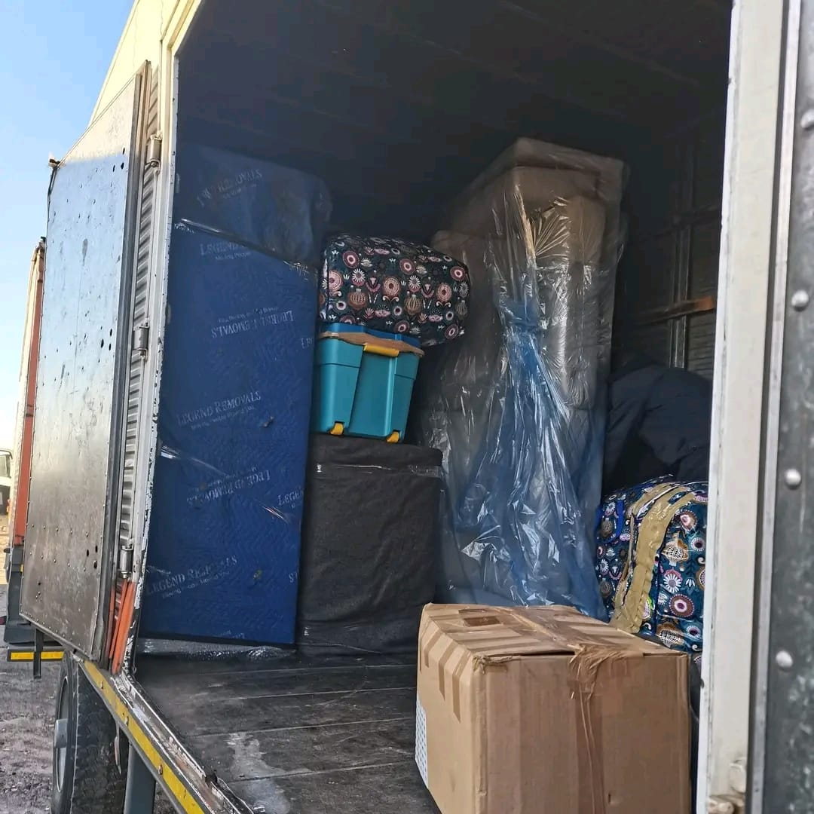

Sea Point & Three Anchor Bay
High-volume apartment removals in Sea Point — lifts, stairs and tight parking handled with a plan.
Sea Point, Green Point, Camps Bay, De Waterkant, Clifton & City Bowl
The Atlantic Seaboard presents unique removal challenges — high-rise apartment buildings in Sea Point, narrow access in De Waterkant, steep driveways in Fresnaye and Clifton, and premium furniture that demands extra care in Camps Bay. Our team is experienced in all of it.
At Wize Removal, we operate the right-sized vehicles for each job, use protective wrapping on premium items and plan access in advance so your removal runs smoothly — without damage to your property or your valuables.

High-volume apartment removals in Sea Point — lifts, stairs and tight parking handled with a plan.
Navigating the cobbled streets and compact access points of Green Point and De Waterkant is our speciality.
Premium removals for Camps Bay and Clifton villas — protective wrapping, white-glove care and punctual service.
Steep driveways and narrow roads in Fresnaye and Bantry Bay — right-sized trucks, experienced crew.
Central Cape Town apartment and office moves — including the busy City Bowl and the historic Bo-Kaap.
Serving the growing Foreshore residential developments and Mouille Point apartments efficiently and on time.
Claremont, Rondebosch, Wynberg, Kenilworth, Constantia & Tokai — all covered.
Southern SuburbsBased in Kraaifontein — fastest response across Bellville, Brackenfell, Durbanville & Parow.
Northern SuburbsJust one couch, bed or appliance to go? Fast single-item collection — no full truck needed.
Single Item Removal